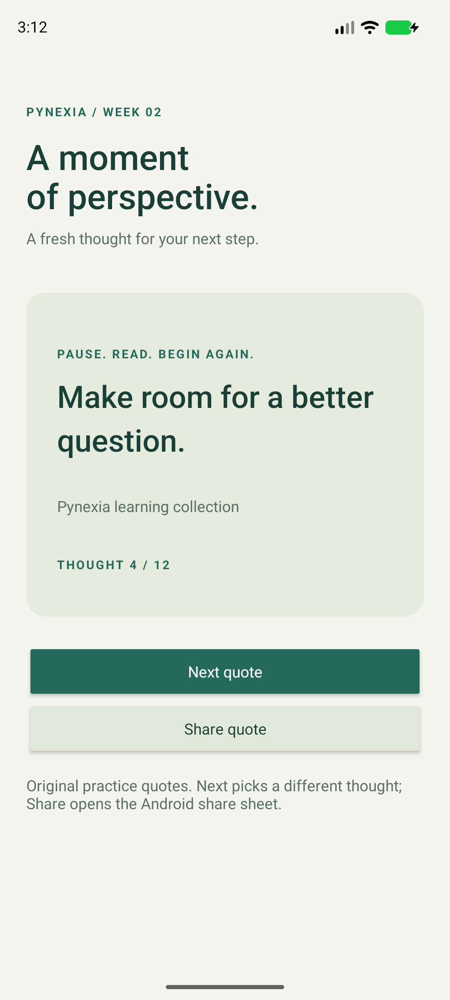

Native Android · Java + XML
Quotes App
A moment of perspective.
Browse original motivational practice quotes, choose another at random and share the displayed text through Android's system share sheet.
Project showcase · Android 8.0+ · Evaluation build.
This page is not an Android emulator.

01 / Implementation
Built around the assignment
Week 2: lists, adapters, collections and local data persistence.
Read the bilingual implementation report (PDF)Collection and random selection
Twelve original practice quotes are stored in a string-array. Next chooses randomly from all other items, avoiding an immediate repeat.
XML interface
TextView renders the quote and collection attribution. Buttons update the quote or open sharing. The screen scrolls on smaller displays.
Persistence and Intents
SharedPreferences remembers the current quote. Saved view state handles recreation. ACTION_SEND with text/plain is wrapped in an Android chooser.
02 / In the app
Actual screens. Verified flows.
Captured from the native Android app. Select a screenshot to see it at full resolution.

03 / Try it
A short review walkthrough
- Open the app and read the current thought.
- Tap Next quote; the selected thought changes.
- Rotate or close and reopen the app; the current thought is retained.
- Tap Share quote and choose a destination in the system share sheet.
Build and run from source
Open the repository root in Android Studio. Use SDK 35 / Build Tools 35.0.0 and JDK 17 or 21. Sync Gradle, then run the quotes module. Initial sync needs internet.
Verification / 2 November 2026
Checks with documented limits
Random bounds and no immediate repeat across 1,000 selections; single/empty collection handling; UI next/recreation and exact shared Intent text.
3 JVM tests and 1 device tests passed. Lint: zero errors, 47 warnings without suppression.
Pixel 8 emulator, Android 17 / API 37 (37.1 image), x86_64. No physical-device or API 26 test run.
Inspect verification resultsشرح التمرين
يعرض التطبيق مجموعة من العبارات التحفيزية الأصلية المخصصة للتمرين. يختار زر التالي عبارة عشوائية مختلفة عن الحالية. يحتفظ التطبيق بالعبارة المعروضة عند إعادة فتحه أو تدوير الشاشة، ويفتح زر المشاركة نافذة المشاركة في Android بالنص الحالي.
04 / Submission kit
Ready for the project form
Copy the links and notes, then attach the ZIP or PDF. This page does not submit to Pynexia.